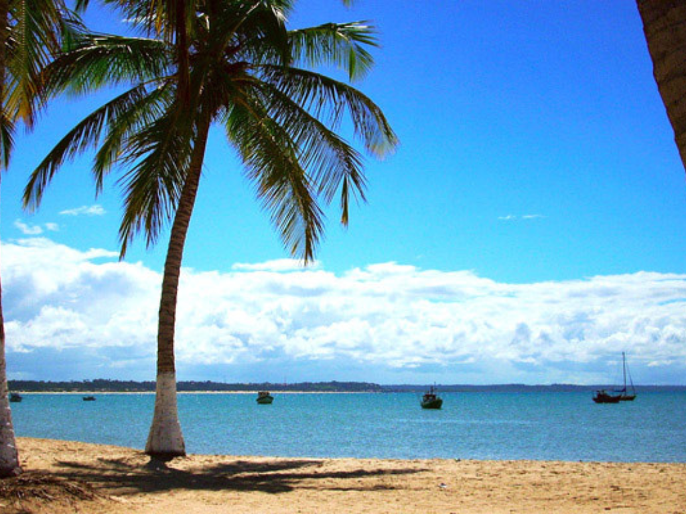

A Bahia é um dos estados mais importantes da região Nordeste do Brasil, conhecida por sua grande influência histórica, cultural e turística. Sua capital, Salvador, foi a primeira capital do país e possui um rico patrimônio histórico, com destaque para o Pelourinho e suas igrejas coloniais. A cultura baiana é marcada pela forte presença africana, presente na música, na dança, na culinária e nas tradições religiosas. O estado também é famoso por suas belas praias, pelo carnaval animado e pela culinária típica, com pratos como acarajé e moqueca. Além disso, a Bahia possui uma economia diversificada, baseada no turismo, na agricultura, na indústria e no comércio.

Voltar